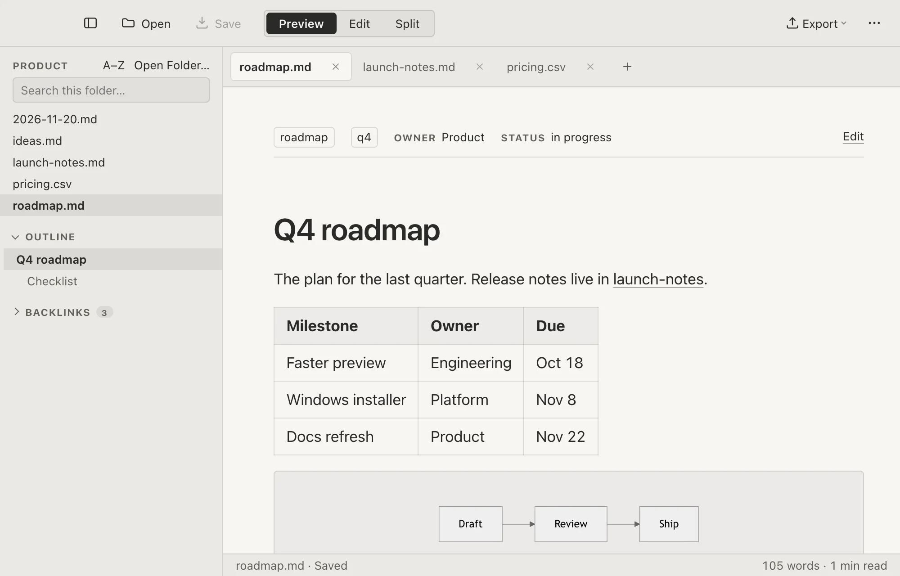
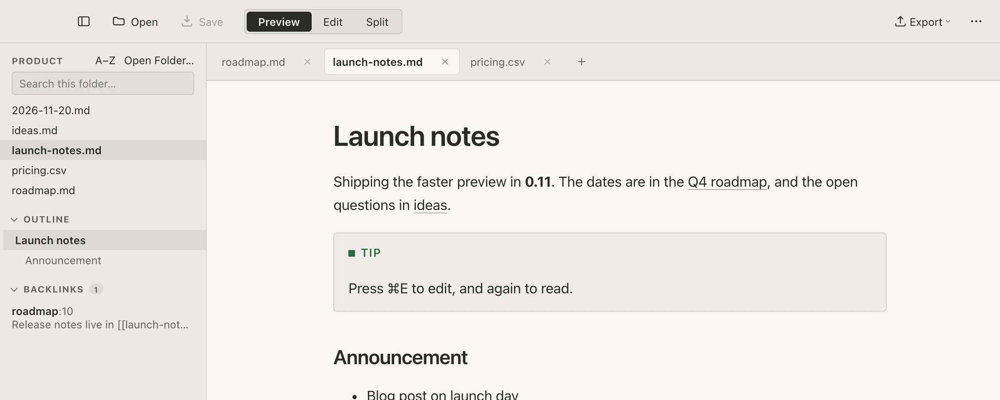
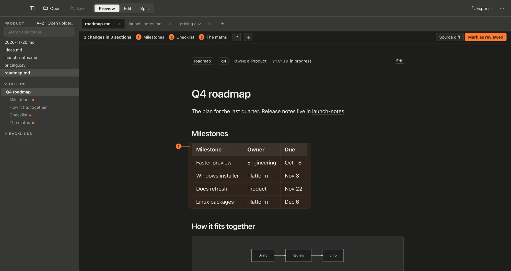

Markdown,
opened properly.
A native Markdown app for macOS, Windows and Linux.
Free for macOS, Windows and Linux
All platforms and formats
- 1Formatted readingDouble-click a file and it opens formatted. ⌘E to edit.
- 2Diagrams and mathMermaid diagrams and KaTeX math, drawn in place.
- 3Tabs and foldersOpen a folder; tabs come back when you relaunch.
- 4OutlineJump to any heading from the sidebar.

1 2 3 4Edit in place, or side by side.
⌘E switches to a CodeMirror editor with live formatting: headings, emphasis, links, tables and math look formatted as you type, and the Markdown reappears on the line you're editing. The file stays plain Markdown.
- 1SourceLive formatting, spellcheck, focus mode and typewriter scrolling.
- 2PreviewSplit view keeps source and preview scrolling together.
- 3Format barHeadings, lists, tables and links; or type
/for a block menu.
Paste an image and it's saved next to the document. File History keeps a snapshot before every save.
 1
2
3
1
2
3
A folder of notes becomes a knowledge base.
Open a folder of notes, and an Obsidian vault works as it is. Every note stays a plain Markdown file on your disk.
- 1Wiki links
[[Note]]links with autocomplete, and hover previews. - 2CalloutsGitHub and Obsidian callouts, foldable if you like.
- 3BacklinksEvery note that links here, with the line it's on.
Also: embeds with ![[Note#Section]], tags, a graph of linked notes, templates, daily notes, and frontmatter as typed properties.

1 2 3See what changed since you last read it.
Markappoly remembers the version of each file you last read. When a teammate's edit arrives with git pull, or an AI agent rewrites a plan, every change is numbered in the margin.
- 1Review barLists the changes by section. F7 steps through them.
- 2Change in the marginHover to see what it said before.
- 3Mark as reviewedClears the marks once you've read them.
- 4OutlineA dot beside each section that changed.
Comment on a passage and copy every comment as Markdown feedback. One switch connects Claude Code, Codex or Cursor, so files they write open in the background.

1 2 3 4The rest of the toolkit.
Data files
CSV and TSV open as an editable table, JSON as labelled fields, JSONL one record per line. Saving rewrites only the values you changed.

Export
Text, single-file HTML, Word, PDF, or Copy as HTML to paste rich text anywhere. Exports match the preview, diagrams and math included. With Pandoc installed you also get RTF, EPUB and LaTeX.
Command line
Install the markappoly command from the app menu, then:
markappoly notes.md
markappoly docs/
claude -p "draft a plan" | markappolyPiped output shows live as it streams.
Get Markappoly.
Free and open source under the MIT licence. The app updates itself, asking before it downloads a new version.
| Platform | Download | Notes |
|---|---|---|
| macOS, Apple Silicon | .dmg | Signed and notarized by Apple |
| macOS, Intel | .dmg | Signed and notarized by Apple |
| Windows | .msi · .exe | 64-bit installer |
| Linux | .AppImage · .deb · .rpm | x86_64 |